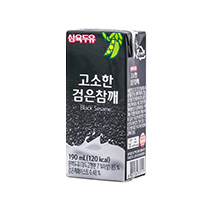
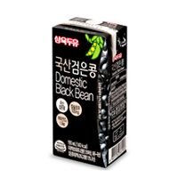
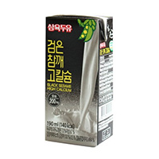
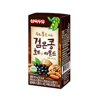
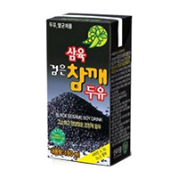
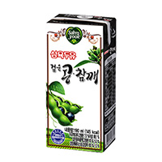

home>제품소개>블랙두유
블랙두유
- 고소한 검은참깨 두유
190ml
- 고소한 검은참깨두유
- 담백한 두유에 고소한 검은 참깨의 풍미를 더한 두유
- 삼육 국산검은콩 두유
190ml
- 국산 검은콩
- 국산100% 안전하고 건강한 프리미엄 두유!
- 삼육 검은참깨 고칼슘 두유
190ml
- 검은 참깨 고칼슘 두유
- 강화된 고칼슘과 영양많은 검은참깨가 어우러져 맛과 영양이 더욱 풍부해진 두유입니다.
- 삼육 검은콩호두와아몬드
190ml
- 검은콩 호두와 아몬드
- 현대인에게 부족해지기 쉬운 견과류의 영양을 보충할 수 있는 프리미엄 두유입니다.
- 삼육 검은참깨두유
190ml
- 검은 참깨
- 두유의 혁명, 검은참깨두유의 원조는 삼육입니다. 인공향을 첨가하지 않은 100% 유기농검은참깨로 고유의 천연의 풍미를 느낄 수 있습니다.
- 삼육두유 검은콩ㆍ참깨
190ml
- 삼육두유 검은콩 •참깨
- 깨끗하고 색다른 양보할 수 없는 맛을 자랑합니다.